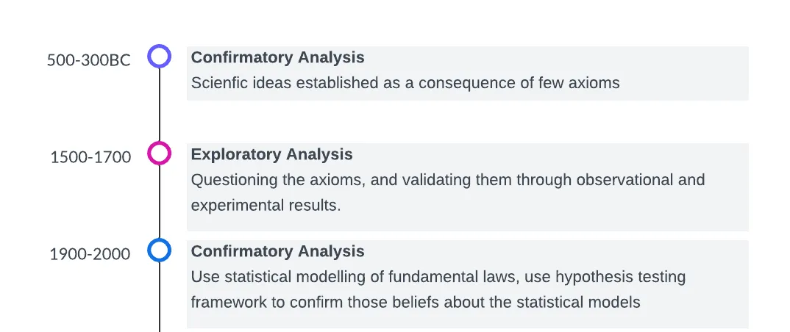
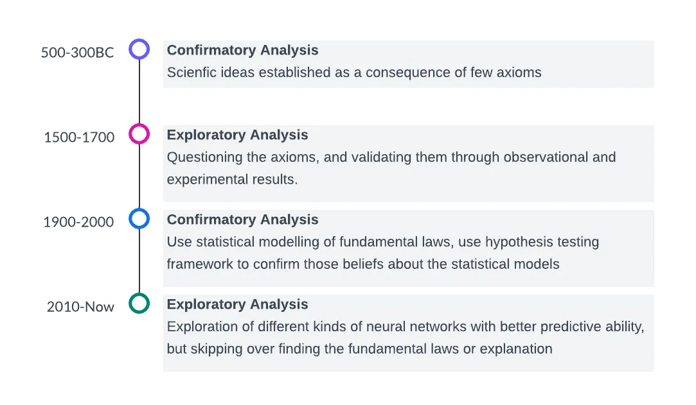

Cover image taken from Unstable Diffusion
Summary: This is more of a philosophical post, concentrated on the history of evolution of scientific approaches: from mathematical laws, statistical modelling and machine learning predictions.
Understanding the world around us is the primary goal of any scientific study. Since ancient times, many civilizations have tried to find the laws of nature, which are found in stone tablets. These derived laws are often simple, and easy to understand and communicate.
In contrast, in recent times, we have again an incredible ability to predict the outcome of the laws of nature, but using very complex machines such as neural networks. These are generally perceived as a key technology of the future for computer scientists, while they are regarded as nothing but a regressive step of scientific understanding by some pedantic mathematicians.
In this post, I look at these contrasting viewpoints from a slightly evolutionary perspective.
Humans, from ancient times, have been equally fascinated by the patterns present in nature, and feared by the unpredictability of it. As a result, they have been trying to uncover the fundamental laws of nature, be it through physics, chemistry, biology or even languages.
Such studies have been going on for thousands of years before. Mayans came up with extremely accurate calendars five thousand years ago, suggesting their experience in astronomy. Similarly, the proficiency of Egyptians in chemistry is apparent through the use of mummification. Indus Valley civilization leaves multiple records of astounding work on metallurgy and civil engineering. However, the scientific procedures used in these studies are still shrouded in mystery, so we will ignore them for now.
Skipping forward for two thousand years, around 500-300 BC, we start finding accurate records of scientific thoughts and movements, mostly led by Greek philosophers like Plato, Aristotle, Pythagoras, Archimedes, etc. At this point in time, most of the scientific discovery followed a similar pattern:
Based on the perceived effect of different forces of nature, we come up with a set of axioms. These axioms are considered to be the fundamental truths.
These axioms are then made to interact with each other using pure logic.
To give you an example, the entire field of Euclidean geometry was developed using the following 5 axioms.
This means, that if you assume the above 5 statements to be true, and use pure logic, it is possible to prove the Pythagorean Theorem, or Ptolemy’s theorem or any other complicated theorem you learnt during 10th standard geometry.
And this is how every single branch of mathematics was born.
While all of these are well and good, there is one flaw with this approach.
Skipping forward another two thousand years, from the 15th century to the 17th century, few people started asking questions about the validity of these axioms. What if, these axioms themselves do not hold true?
As we all know, Galileo challenged the axiom of Earth being the center of the universe and postulated from his observational studies that this axiom must not be true.
John Tukey, in his book Exploratory Data Analysis, describes this mindset shift from a “confirmatory analysis” to an “exploratory analysis”, where instead of starting with a set of postulated beliefs that confirms the behaviour of nature, one rather keeps an open mind and creates those laws by exploration of the behaviour of the nature directly. An exploratory analyst would then try to reduce these observations as a cause of few fundamental laws.
A related anecdote is from a conversation that took place between Pierre de Simon Laplace (you might know him from Laplace transform) and Napoleon Bonaparte (you might know him as a political leader during the French Revolution) around 1802. Laplace was the physics professor of Napoleon, so Napolean honoured him by making a senator in France, once he gained political power. During this time, Laplace was studying astronomy and discovering laws of planetary movement using the hypothesis of Newtonian gravity. In the end, he wrote a book “Celestial Mechanics”, which he presented to Napoleon. After that, the following conversation took place (paraphrased from here),
Napolean: Sire, this is all a great book, but I have not been able to find the name of God even once in your book.
Laplace: I have no need for that hypothesis.
[Silent]
Laplace: The true object of the physical sciences is not the search for primary causes [i.e. God] but the search for laws according to which phenomenon are produced.
However, even though Laplace came up with a set of fundamental laws that could predict the movement of these celestial bodies several years ahead in the future, he still needed something called “error function” to replace the hypothesis of an almighty creator. He understood that nature does not obey these laws precisely, but only approximately. Laplace attributed these “errors” as
The optimistic viewpoint of many scientists around that time was that with time, human technology would improve, increasing measurement accuracy and thus decreasing the error component, and might be vanishing someday.
David Salsburg, in his book “The Lady Tasting Tea” indicated that
By the end of the nineteenth century, the errors had mounted instead of diminishing. As measurements became more and more precise, more and more error cropped up
It is as if the entire foundation that “there are some fundamental deterministic laws that govern nature” was starting to crumble. Most of the work from the 17th and 18th centuries became too pedantic, and often approximations of reality. Around this time, some scientists started considering merging this form of deterministic law with the study of probability (which was around for some time as a popular tool for Gamblers) to understand the errors, and a new paradigm of “statistics” (in its classical form as we see today) was born.
This was a philosophical shift in the mindset of the scientists about how scientific studies would be performed. Perhaps, a significant amount of this shift can be attributed to the pioneering work by Ronald A. Fisher, who systematically studied the design of experiments and determined how this error can be reduced even without any precise measurement technology. In John Tukey’s terms, people were again shifting from an exploratory analysis to a confirmatory analysis.

Later, skipping forward to the late 20th century, we see the emergence of quantum theory which partially explains why errors were not reduced as Newton, Laplace and many other contemporaries hoped it to be. It says that the interaction between the particles (atoms, subatomic particles, etc.) is best described theoretically by using randomness equipped with a probability model. On the other hand, measuring these particles’ properties only gives you a realization of that randomness, which must come with an error.
Just to reiterate, the deterministic philosophy modelled any dependent variable $Y$ as a deterministic function of the independent variables $X$, i.e., $$ Y = f(X), $$ where $f$ is usually a simple fundamental law.
With the emergence of statistical theories, this perception changed to $$ Y = f(X, \epsilon), \ X \text{ is independent of } \epsilon, \ \epsilon \sim \mathbb{P}, $$ implying that the dependent variable is now a function of both $X$ and the error $\epsilon$ (independent of $X$), and is governed by a probability law $\mathbb{P}$.
From 1958’s perceptron, the simplest possible neural network built by Frank Rosenblatt, we have now come a long way now in 2020-30 to see neural networks with a few billion parameters. However, from the 1960s to the 2000s, neural networks were seen mostly as a tool from books with not much direct applications to the scientific community.
The primary evolutionary goal of science is to come up with predictions (predict when the rain will come, predict whether there will be draught, predict the spread of a disease, etc.), for which, the knowledge of fundamental laws is just an intermediary step. While the statistical model of reality provides us with a way to find the underlying fundamental laws governing nature, it does not pave the way to perform the predictions directly. Because the models rely on unobservable errors, it is only possible to give a stochastic prediction of the dependent data Y for unknown independent causes X (e.g. - there is a 60% chance of rain, there is a 90% chance that the disease will not spread as an epidemic, etc.)
So, to realize the dream of prediction, it is meaningful to remove the error component from the input to the fundamental laws and think that these fundamental laws themselves are an approximate and simplistic version of true laws that govern nature; These true laws are stochastic, and are essentially determined by the extremely complex interactions between atomic and sub-atomic particles concerning the dependent variables X. This means, in mathematical terms, we use the predictive model $$ Y = f(X), \ Y_{\text{pred}} = f_\epsilon(X), \ \Vert f - f_\epsilon\Vert < \epsilon, $$ that means we aim to perform the prediction using an approximate function of the natural laws, instead of trying to understand the natural law itself. This again sets us off on an exploratory path, since now we are not hoping to confirm our understanding of the fundamental laws, but rather explore its effects in a meaningful way that allows us to make better predictions and better decisions. These approximated laws are modelled by neural networks, which is basically multiple stacks of functions interacting with each other in a non-trivial way.
Just to illustrate this further, while Kepler’s law and Newtonian theories of gravity are used to understand planetary motions, NASA has started applying neural networks as a tool to simulate their motions far ahead in the future, as William Steigerwald explained.
In summary, before neural networks, we used to use scientific experiments as a way to obtain the fundamental laws, and then use those fundamental laws to understand and predict the behaviour of nature.
With the advent of powerful computers and neural networks, we skip the intermediate step of understanding and explaining the fundamental laws and move directly to the prediction stage.
This also makes sense, as the quantum theory (mentioned before) tells us that the fundamental laws may not be as simplistic and deterministic as we would want. It may well be that these fundamental laws are the realizations of some random movement of billions of different particles, all behaving in a chaotic manner governed by different stochastic rules. If that’s the case, then the conclusion is very bleak, and it is hopeless to try to find simple explanations of the phenomena in nature.
This, if true, is in complete contrast with the most fundamental problem-solving principle established in all of science, the well-known Occam’s razor.
The simplest explanation is the best one!
Suppose we just change the perspective and consider John Tukey’s taxonomy of scientific approaches. In that case, the era of artificial intelligence brimming with neural networks and generative AI can be regarded as an exploratory analysis. People are every day coming up with better models, and most of it is driven by the exploration of new datasets, new computational tricks and new model architectures. Looking at this journey, we can see a fascinating pattern:

The entire timeline of changes in scientific approaches can be described by two cycles of movement between confirmatory and exploratory analysis phases and vice versa, and each time, the cycle length decreases due to the exponential technological advances of humankind.
As we stand at this crossroads of scientific inquiry, we face some intriguing questions:
What do you think? Share your thoughts in the comments and let’s continue this fascinating discussion!